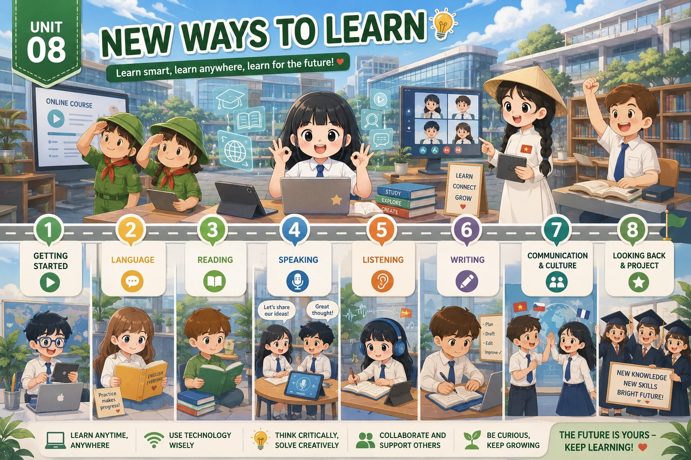

Lesson 1 · Getting started — chưa có bài giảng Lesson 2 · Language — chưa có bài giảng Lesson 3 · Reading — chưa có bài giảng Lesson 4 · Speaking — chưa có bài giảng Lesson 5 · Listening — chưa có bài giảng Lesson 6 · Writing — chưa có bài giảng Lesson 7 · Communication and Culture / CLIL — chưa có bài giảng Lesson 8 · Looking back and Project — chưa có bài giảngBản đồ Unit 8 đã dựng, chưa có tiết nào — tám thẻ đang khoá. Dựng xong tiết nào thì mở khoá thẻ đó.